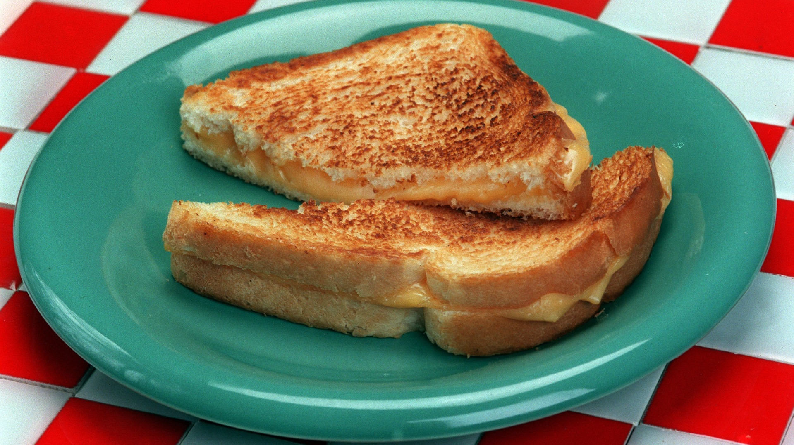

Home
Grilled Cheese

Description
A simple classic paired well with tomato soup. Combining bread and cheese to create a high-carb fusion perfect for quick lunches.
Ingredients
- 8 teaspoons butter, softened
- 8 slices bread
- 8 American Cheese slices
Steps
- Spread the butter on the bread slices.
- Place 4 bread slices, butter-side down, into a 12-inch skillet. Top with the cheese slices and remaining bread slices, butter-side up. Cook over medium heat until the sandwiches are lightly browned on both sides and the cheese is melted.